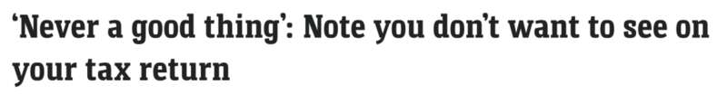
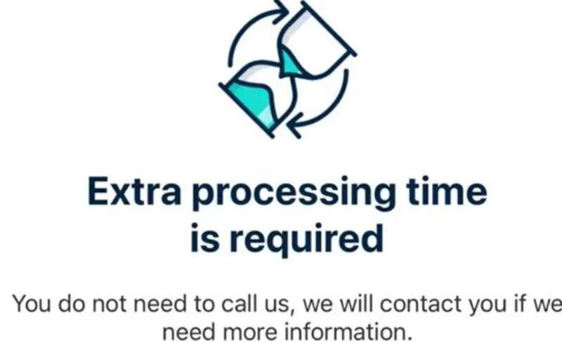

澳媒报道称，一位税务专家警告称，澳洲民众在报税时常犯同样的错误，导致实际退款金额与期望值相距甚远。

随着新财年的到来，澳洲会计公司Hive Wise的创始人Hripsime Demirdjian提醒大家不要过早报税。
她指出，大多数雇主在7月14日之前才会向澳洲税务局（ATO）提交完整的工资数据，因此提早报税可能会引发问题。
然而，有些澳洲人并没有听从这一警告。

Demirdjian最近在TikTok视频中分享了一个实际例子，来说明这一点。
“这就是为什么我说不要在7月1日就报税，但没人听，看看这个例子，”她说。
她提到了一位名叫Skye的24岁澳洲人，Skye在报税后在社交媒体上分享了自己的经历。
起初，她被告知预计退税金额为3083澳元，但后来退税状态上出现了“需要额外处理时间”的备注后，她的预计退税金额降到了341.56澳元。
“为什么我只得到了这样？谁能解释一下，”Skye疑惑不已。
Demirdjian解释说，这正是人们应该等到“万事俱备”后再报税的原因。
她在接受媒体采访时表示，当税务系统识别到报税信息不完整时，就会出现“额外处理时间”。
（图片来源：澳媒）
“这种情况通常发生在你过早报税，而你的预填数据尚未标记为‘税务准备好’的时候，”她进一步解释道。
税务局将利用这段额外时间核实你报税时提交的信息是否与其他政府机构和第三方机构（如Centrelink、银行和私人健康保险提供商）一致。
在这段时间内，如果需要额外信息，税务局可能会直接联系你。
Demirdjian警告说，退税被标记为“需要额外处理时间”，不是什么好事。
根据你报税信息的不完整程度，退税金额可能会低于原先的预估，甚至可能需要补交税款，这会令人失望。
如果你的退税被标记为“需要额外处理时间”，税务局通常会修改你的报税信息以包含正确的信息，这往往会导致你欠税务局金额。
（图片来源：网络）
此外，如果修改发生在报税截止日期之后，还需要支付晚付款的利息，目前这一利率将高达11.36%。
Demirdjian还批评了一个普遍的误解，即报税会自动带来大量退税，这也是驱使人们急于尽早报税的一个主要原因。
她指出，获得大量退税要么意味着雇主从工资中扣除了过多税款，要么意味着你有大笔扣除额，从而减少了你的应税收入。
她之前对媒体表示，“如果你没有以上任何一种情况，那么你不太可能获得大量退税。”
在今年的报税季节前，税务局对澳洲人发出了严厉警告，在家办公将成为关键审查领域之一。
税务局助理专员Rob Thomson表示，在家办公费用是人们最容易出错的区域之一。他指出，虽然这些错误通常是无心的，但也有一些是“故意”的。